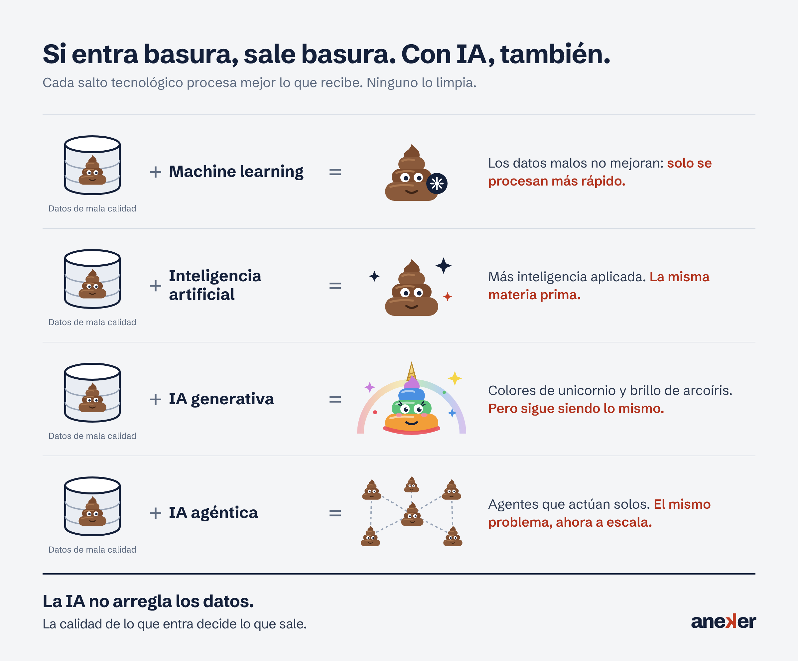

Otra mirada. Mejores resultados.A different view. Better results.
Ayudamos a las empresas a darle la vuelta a sus procesos: menos papel, menos fricción y más decisiones con criterio. Gestión documental, automatización e inteligencia artificial aplicadas con los pies en el suelo.
We help companies turn their processes around: less paper, less friction and better-informed decisions. Document management, automation and artificial intelligence, applied with both feet on the ground.
Foto de portada (img/portada.jpg): oficina real, archivo o personas trabajando con documentosCover photo (img/portada.jpg): a real office, archive or people working with documents
Lo que hacemos, contado sin rodeos.What we do, in plain words.
Desde un diagnóstico rápido hasta un proyecto completo de principio a fin. Cada servicio se adapta al tamaño y al momento de tu organización. Pulsa el botón para ver el punto de partida que solemos encontrar.
From a quick assessment to a complete end-to-end project. Every service adapts to the size and stage of your organisation. Press the button to see the starting point we usually find.
Consultoría de procesosProcess consulting
Lo que hacemosWhat we do
Analizamos cómo trabaja hoy tu equipo, detectamos dónde se pierde el tiempo y rediseñamos el proceso para que fluya en digital.
We look at how your team works today, find where time gets lost and redesign the process so it flows digitally.
Lo que solemos encontrarWhat we usually find
Tareas que dependen de una sola persona, hojas de cálculo que nadie entiende y pasos que se repiten.
Tasks that depend on one person, spreadsheets nobody understands and steps that get repeated.
Gestión documentalDocument management
Lo que hacemosWhat we do
Implantación, migraciones e integraciones con ERP y otros sistemas. Captura, archivo, flujos de aprobación y cumplimiento normativo.
Implementation, migrations and integrations with ERP and other systems. Capture, archiving, approval workflows and compliance.
Lo que solemos encontrarWhat we usually find
Documentos repartidos entre papel, carpetas compartidas y el correo de cada uno.
Documents scattered across paper, shared folders and everyone's inbox.
IA aplicadaApplied AI
Lo que hacemosWhat we do
Agentes y automatizaciones que leen, clasifican y extraen información de tus documentos. IA útil, medible y bajo control.
Agents and automations that read, classify and extract information from your documents. Useful, measurable AI that stays under control.
Lo que solemos encontrarWhat we usually find
Personas copiando a mano datos de facturas, pedidos y contratos.
People copying data from invoices, orders and contracts by hand.
Consultoría TIC avanzadaAdvanced IT consulting
Lo que hacemosWhat we do
Arquitectura de soluciones, nube, seguridad e integración de sistemas. Una segunda opinión experta antes de las decisiones importantes.
Solution architecture, cloud, security and systems integration. An expert second opinion before the big decisions.
Lo que solemos encontrarWhat we usually find
Decisiones de arquitectura, nube o seguridad tomadas con prisa y sin una segunda opinión.
Architecture, cloud or security decisions made in a hurry, without a second opinion.
Formación y mentoringTraining and mentoring
Lo que hacemosWhat we do
Talleres prácticos y acompañamiento a equipos técnicos y de negocio, para que el conocimiento se quede en casa cuando el proyecto termina.
Hands-on workshops and coaching for technical and business teams, so the knowledge stays in-house once the project ends.
Lo que solemos encontrarWhat we usually find
Conocimiento que desaparece cuando termina el proyecto o se marcha el proveedor.
Knowledge that disappears when the project ends or the supplier leaves.
Tres pasos para darle la vuelta.Three steps to turn it around.
Ni teoría infinita ni tecnología por la tecnología. Primero entender, después cambiar y, al final, comprobar que funciona.
No endless theory, no technology for its own sake. Understand first, then change, and finally check that it works.
EntenderUnderstand
Escuchamos, mapeamos el proceso real (no el del manual) y medimos dónde duele.
We listen, map the real process (not the one in the manual) and measure where it hurts.
Darle la vueltaTurn it around
Rediseñamos el proceso y elegimos la tecnología justa, con una estimación clara de esfuerzo y coste.
We redesign the process and pick just the right technology, with a clear estimate of effort and cost.
Poner en marchaMake it run
Implantamos, formamos al equipo y medimos resultados. El proyecto termina cuando funciona, no cuando se entrega.
We implement, train the team and measure results. The project ends when it works, not when it's delivered.
Un equipo pequeño, con mucho oficio.A small team, with a lot of craft.
Tu foto (img/jj-requena.jpg): retrato natural, mejor en un entorno de trabajo realYour photo (img/jj-requena.jpg): a natural portrait, ideally in a real work setting
Detrás de Aneker hay más de 35 años de experiencia en tecnología, gestión documental y procesos digitales. Conocemos todas las fases de un proyecto: preventa, estimación de esfuerzo, consultoría técnica e implantación de principio a fin.
Behind Aneker lie more than 35 years of experience in technology, document management and digital processes. We know every stage of a project: pre-sales, effort estimation, technical consulting and end-to-end delivery.
Aneker es un guiño a darle la vuelta a las cosas: mirar los problemas desde un ángulo diferente hasta encontrar la salida. Es nuestra manera de trabajar.
Aneker is a nod to turning things around: looking at problems from a different angle until the way out appears. It is how we work.
La tecnología cambia cada año. El criterio para usarla bien se construye en décadas.
Technology changes every year. The judgement to use it well takes decades to build.
Nuestro equipo digitalOur digital team
Trabajamos junto a agentes de inteligencia artificial que hemos creado nosotros. Hacen el trabajo repetitivo en minutos; las personas revisan, deciden y responden. Sus nombres se leen igual al derecho y al revés.
We work alongside artificial intelligence agents we built ourselves. They handle repetitive work in minutes; people review, decide and answer. Their names read the same forwards and backwards.
Ana
Documentos · agente de IADocuments · AI agent
Lee, clasifica y extrae datos de facturas, contratos y expedientes.
Reads, classifies and extracts data from invoices, contracts and files.
Otto
Estimaciones · agente de IAEstimates · AI agent
Prepara estimaciones de esfuerzo, planificaciones y borradores de propuesta.
Drafts effort estimates, project plans and proposal outlines.
Ava
Análisis · agente de IAAnalysis · AI agent
Analiza procesos y datos para encontrar cuellos de botella y oportunidades.
Analyses processes and data to find bottlenecks and opportunities.
Bob
Asistencia · agente de IAAssistance · AI agent
Resuelve dudas técnicas y prepara documentación para los equipos.
Answers technical questions and prepares documentation for teams.
Nuestra red de especialistasOur specialist network
Cuando un proyecto lo necesita, sumamos especialistas de confianza. Tú sigues teniendo un único interlocutor.
When a project needs it, we bring in trusted specialists. You still have one single point of contact.
Integración de sistemasSystems integration
ERP, bases de datos y conectores entre aplicaciones.
ERP, databases and connectors between applications.
Arquitectura cloudCloud architecture
Diseño y despliegue de soluciones en la nube.
Design and deployment of cloud solutions.
Seguridad y cumplimientoSecurity and compliance
Protección de datos, normativa y auditorías.
Data protection, regulation and audits.
Desarrollo a medidaCustom development
Aplicaciones, automatizaciones y scripts específicos.
Applications, automations and bespoke scripts.
Firma digital y validez legalDigital signature and legal validity
Certificados digitales, firma electrónica y validación de documentos.
Digital certificates, electronic signatures and document validation.
CuadernoNotebook
Lo que aprendemos en los proyectos, contado para quien tiene que decidir.
What we learn on projects, written for the people who have to decide.

Inteligencia artificial · 7 min de lecturaArtificial intelligence · 7 min read